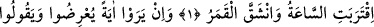
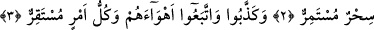
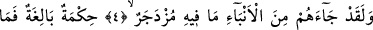
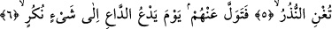
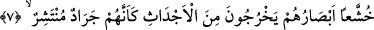
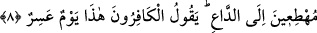

HER İŞİN ULAŞACAĞI
YERİ VARDIR
Bismillâhirrahmânirrahîm
1. Kıyâmet yaklaştı ve ay yarıldı.
2. Onlar bir mûcize görürlerse hemen yüz çevirirler ve: Eskiden beri devam
edegelen bir büyüdür, derler.
3. Yalanladılar ve kendi heveslerine uydular. Halbuki her işin ulaşacağı yeri
vardır.
4. Andolsun onlara, kötülükten önleyecek nice önemli haberler gelmiştir.
5. Bu büyük bir hikmettir. Fakat (yüz çevirene) uyarılar ne fayda verir!
6. Çağıranın görülmemiş bir şeye çağırdığı gün, sen de onlardan yüz çevir.
7. Sanki etrafa yayılmış çekirge sürüsü gibi bakışları perişan (utançtan yere
bakar) bir halde kabirlerden çıkarlar.
8. Dâvetçiye koşarak. O esnada kâfirler: Bu, çok çetin bir gündür! derler.
Buradaki sâat, bir zaman birimi/dilimidir. “Kıyâmet” kelimesi karşılığı ifâde
buyurulmuştur. Kıyâmetin hesabı çok çabuk görüleceğinden, kısa bir zamana benzetilmiş
veya dünya hayatını oluşturan zaman içinde en son anda kopacağından veyahut içinde
büyük bir olayın gerçekleşeceği kısa bir an olduğundan, ya da daha başka bir sebeple
kıyâmet kelimesi yerine sâat kelimesi zikredilmiştir.
Âyet-i kerîme’nin anlamı, “Kıyâmetin kopması ve gerçekleşme ânı yakınlaştı”
demektir. Peygamberimiz (s.a.)’in buyurduğu gibi, dünyanın az bir zamanı
kalmıştır;“Allah Teâlâ dünyanın tamamını az kılmıştır. Ondan kalan azın da azıdır.
Sel yolundaki çukurun içinde biriken durulmuş saf suyun içilip bulanık az kısmının
kalması gibi.”[138]